GEOMETRY:
This is the metaprism, it holds all possible harmony in and between all keys:
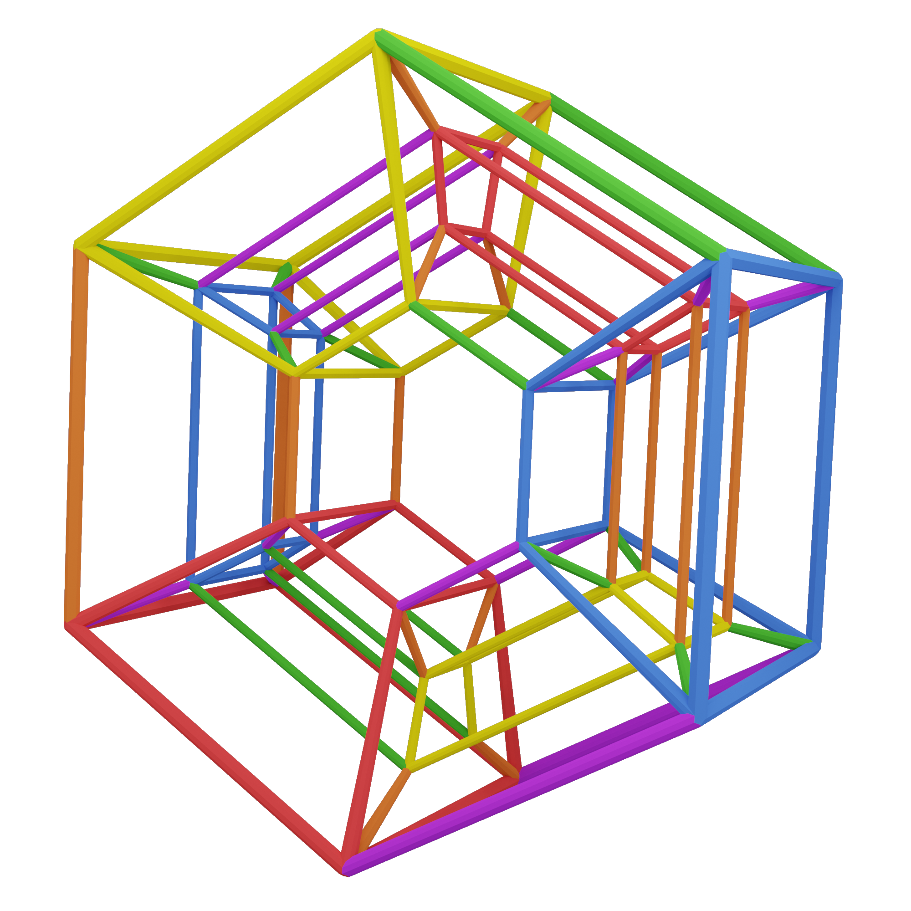There's nothing we can do in western harmony that isn't encapsulated by the metaprism
We can start in any key, use any chords in that key, and change into any other key.
The metaprism simply joins the hypercubes together:
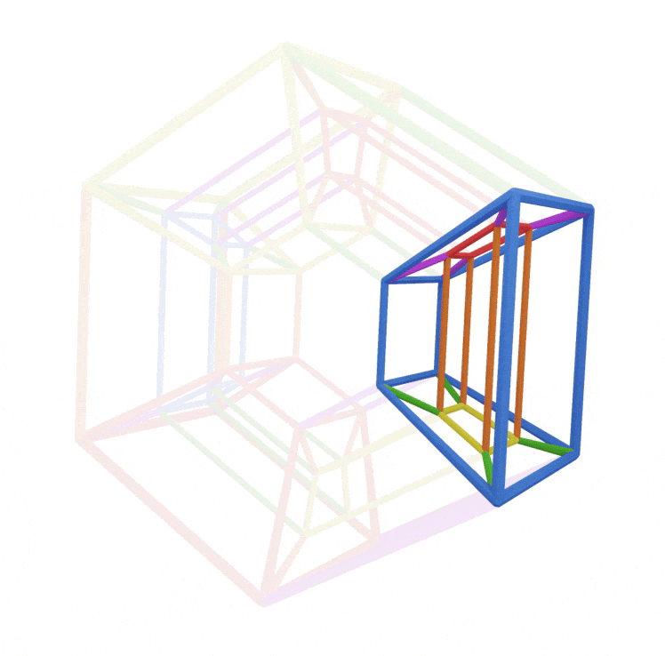Ok, Here's a familiar hypercube, but we stretch the inner cube like this:
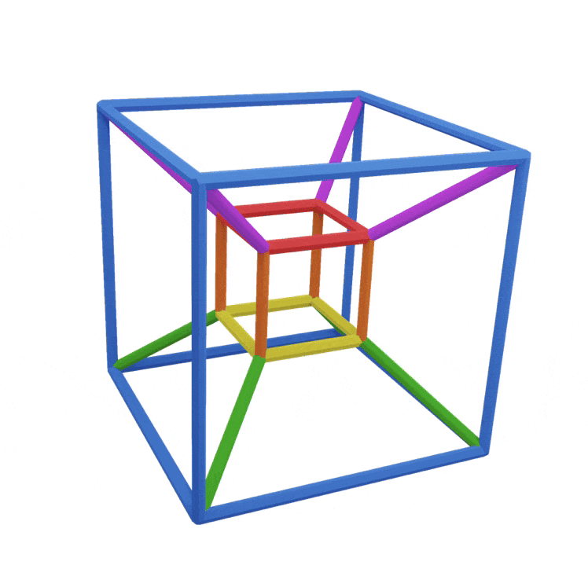Nothing about the hypercube has been changed
We still have the purple alpha cube and its four chords for example:
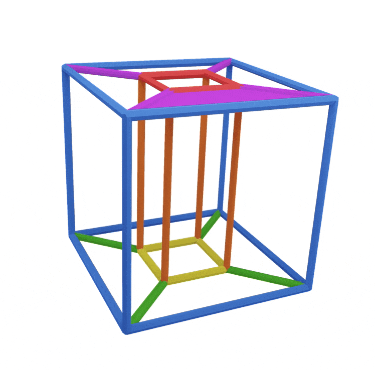The purple cube has just been squished flat.
Same for the green cube below
We can see how the purple cube is part of both hypercubes
We can see our joined orange and green hypercubes forming part of the metaprism
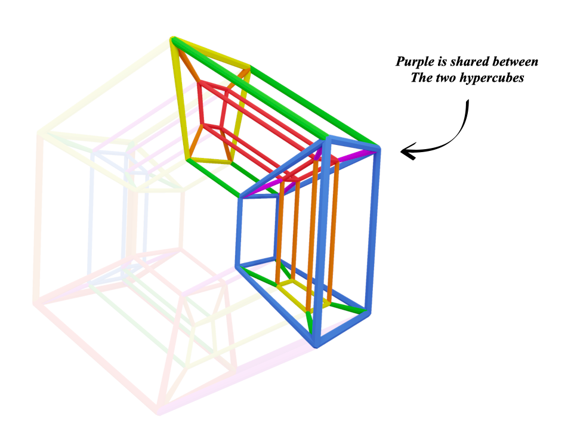This is how the hypercubes join around the whole metaprism:
All the hypercubes we've seen have the tonic cube (green) in the middle,
and the complimentary diminished cube (red) on the outside:
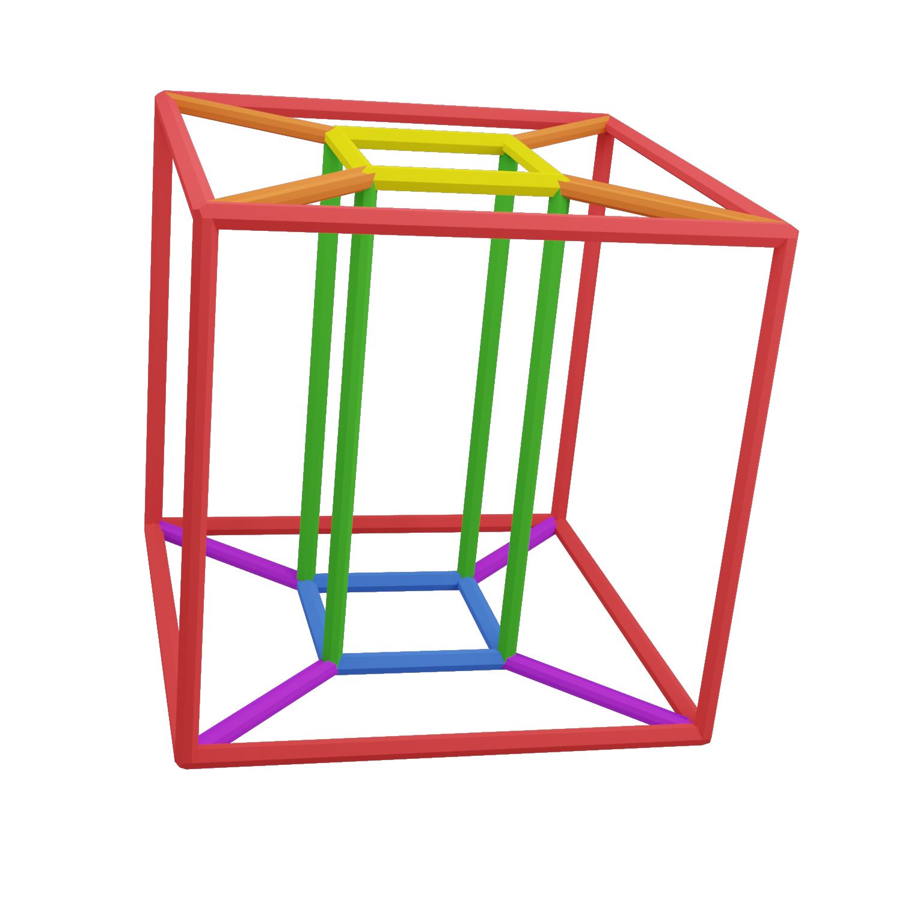Heres a IV V I with green in the middle:
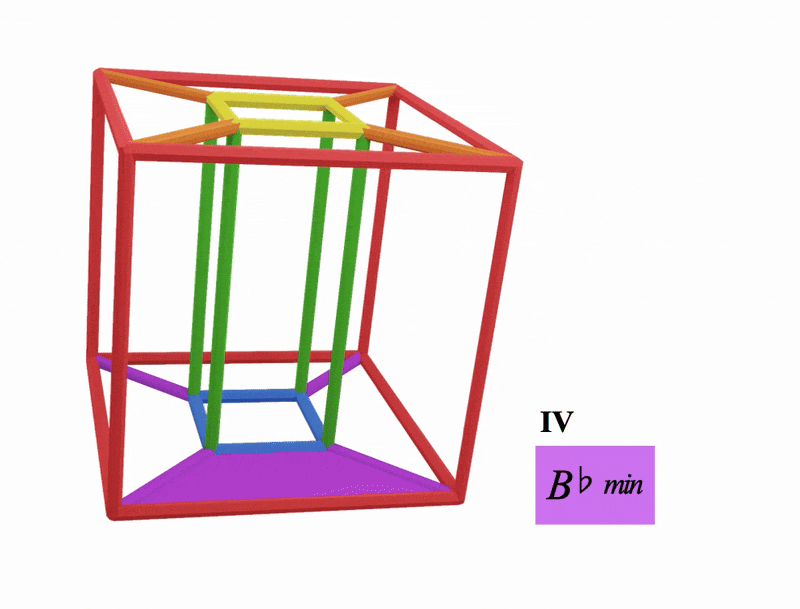Heres a IV V I with green on the outside:
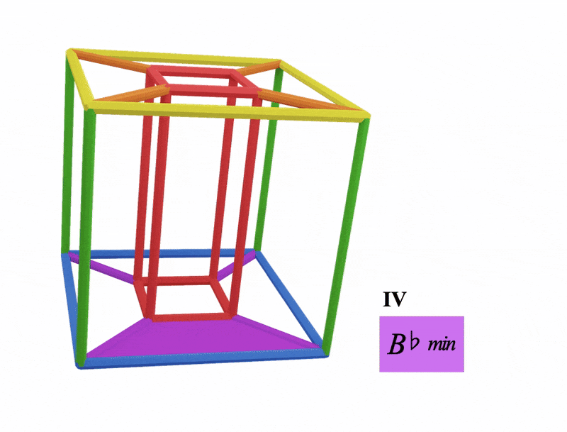In the metaprism, these three hypercubecubes have their tonics in the middle:
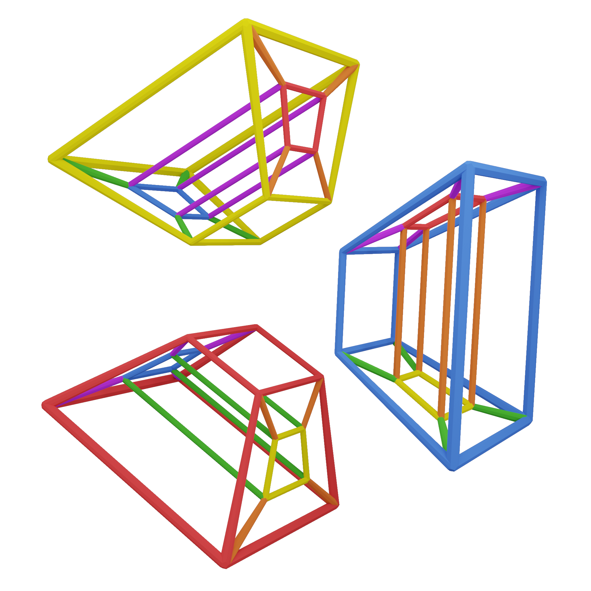and these three hypercubes have their tonics on the outside:
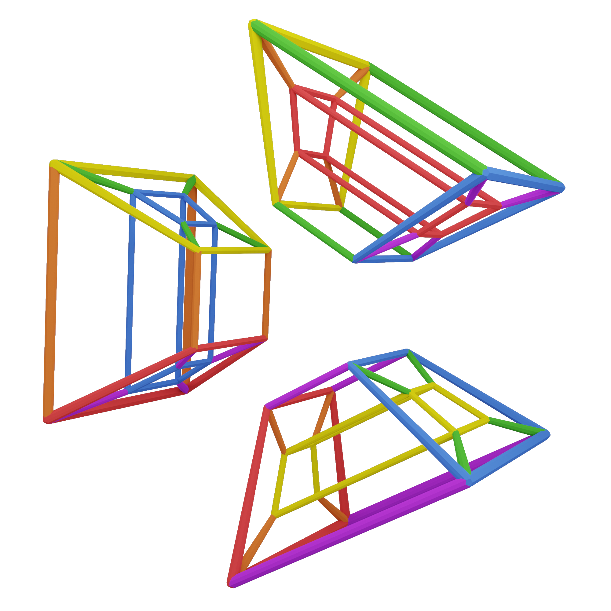After a bit of study it gets really easy to quickly identify the hypercubes and whether they're innies or outies
look at a hypercube, what colour is the centre cube?
A secondary colour? then thats your tonic
or is it a primary colour? then thats the complementary colour of your tonic
or do this by looking at the outer cube
We have an innie and an outie of each hypercube
They're duplicated so the meta prism can connect in the proper way and allow for arcades
Stay on this page and meditate on the visualisations for as long as need
and do return to it as often as you feel the need
These pages are meant to be returned to and studied over and over
There's always more to see in these shapes
Here's a simple progression turning chord iii (dominant) in C major into chord ii (subdominant) In D major:
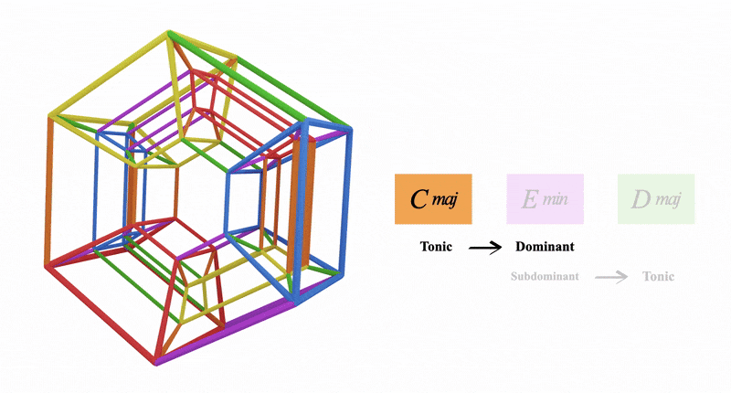Hear how E minor sounds like chord iii in C but retrospectivly sounds like chord ii in D major
Check out the cookbook page on doing more with this specific idea:
ii to iiiThis idea stayed within one arcade (see next page)
But we can also traverse the metaprism across multiple arcades like this:
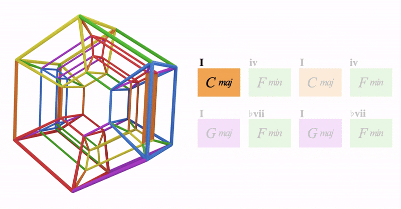We start in C major, we grab Fm (the minor iv)
This is all in the orange hypercube
But we take that F minor and pivot into the purple hypercube
This makes F minor a dominant chord, which we can resolve to any purple key
So we choose G major, making F minor the minor backdoor
Check out exploring the dominants in the cookbook to hear all these movements:
Exploring the DominantsOur progression has a few layers of complexity to it because we're using strong non diatonic chords between both keys
We use a non diatonic chord in C (Fm)
Turn that into a minor backdoor of G
And we keep using the Fm in G
another thought: this progression could stay in the orange hypercube with G^7 being a dominant chord
We could just resolve that G back to the key of C, this would mean everything would stay in the orange hypercube
But we establish G major as the new tonic, which means we've traversed the metaprism and landed in the purple hypercube
Once we feel comfortable indentifying the hypercubes in the metaprism we're ready to see the arcades
Back to Hypercubes | Continue to Arcades